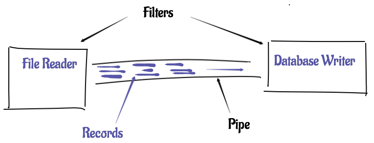

Current State¶
Pneumatic is in the “proof of concept” stage of development. It can already do very useful things, but I recommend you be conservative in your uses of it. With your feedback, however, it should progress to wider usage scenarios quickly. I encourage you to try it out and provide your feedback on the official forum.
License¶
Pneumatic is licensed under the GNU Affero General Public License. To acquire Pneumatic under a different license, contact Surging Systems.
Concepts¶
Jobs and Filters¶
Pneumatic “programs” are represented as “jobs”. Jobs read from files, from databases, from services and write to those same things. They transform data, join it, filter it, aggregate it and more.
The reading, writing, transforming, etc. are done in “filters”. Filters are connected through pipes that carry the data from one filter to the next. This pipes and filters architecture is widely-known. It’s conceptually simple, yet quite powerful, and is the fundamental pattern of Pneumatic jobs.
It looks a bit like this:
Scale this out with more pipes connecting more filters and you get the picture of the architecture of Pneumatic.IO. Simple concepts form powerful jobs.
These concepts are fundamental, but the words “job” and “filter” don’t often appear in Pneumatic configurations. But as we discuss Pneumatic in this guide, we will use those terms, so you still need to understand them.
Running a Job¶
Jobs may be run in a variety of ways. The easiest way to run a job is using the “Pneumatic Shell” (pn.sh on most systems or pn.cmd on Windows). The file pn.sh is in the pneumatic-samples project on GitHub.
If your job is contained in job.xml, run it like this:
sh pn.sh run job.xml
If you have, for example, RESTful services provided by your job, use the Spring Boot runner:
sh pn.sh boot job.xml
The boot runner will stay resident until Spring Boot shuts down.
From these examples, it’s obvious that Pneumatic requires Java. Pneumataic is currently compiled to Java 8.
Using the script is easy, but it does quite a few things. The script uses Gradle to:
- download the latest version of Gradle
- compile Pneumatic.IO
- run the job
The first two are only done if necessary: if Gradle has already been downloaded, or Pnematic is already built, it won’t do these things again.
Gradle and Pnematic.IO are both dependent on a Java runtime on your system. Pneumatic is currently compiled to Java 8.
Schemas¶
Schemas describe the structure of data. Filters use schemas for validating and generating structured data in the form of “records”. A record may be thought of as an “instance” of a schema. A schema is to a record like a car is to a 2015 Porsche 911.
From the previous example, a schema is defined using the etl:schema tag. A schema may have one to any number of columns, each with a name and a type. Currently, Pneumatic only supports string (Java String), integer (Java Integer) and decimal (Java Double) column types.:
<etl:schema id="mtbSchema" name="MTB Schema">
<etl:column name="name" type="string" />
<etl:column name="year" type="integer" />
<etl:column name="cost" type="decimal" />
</etl:schema>
If a record does not need to be validated or generated, no schema is required by the filter. An example of this is the copy filter which copies the input records to the configured outputs, unmodified.
Sometimes a schema is optional. If the schema is not provided, information is derived from other configuration or runtime elements (like the structure of the incoming record). If the schema is supplied, it can be used to validate the configuration of the filter. This requires slightly more configuration, but schema information in validated before a job starts, so supplying a schema can save time spent processing with an invalid configuration.
Schema Types¶
There are three types of schemas:
- Tabular schemas - (
etl:schema) represent traditional (i.e., database like) schemas with fixed columns and data types. - XML schemas (experimental) - (
etl:xmlSchema) represent schemas for XML documents based on the XML Schema Definition. XML schemas work in some cases but are experimental at this point. - JSON schemas (experimental) - (
etl:jsonSchema) represent schemas for JSON documents based on http://json-schema.org/.
Pipes¶
Pipes are conduits for data. Pipes hold data after it is processed by a filter, until it is extracted by another filter. Pipes have a fixed (and configurable) capacity. When the capacity is reached, a filter putting a record into a pipe will block until the filter on the other end of the pipe removes a record.
Foundations¶
Pneumatic leverages Spring projects whenever possible, and that’s quite often. There are areas where Pneumatic diverges from some frameworks like Spring Batch. In the future, it is possible that Pneumatic will be more closely aligned with this project and possibly others.
There are enormous benefits from leveraging Spring. Some of these are:
- The use of quality, tested frameworks and components that don’t have to be reinvented.
- The extensible XML markup that makes for an easy to use DSL while enabling massive extensibility.
- The ability to extend the framework by creating Spring beans and wiring them to ETL components.
- The ability to test portions of a job in a way that more closely aligns with traditional unit testing.